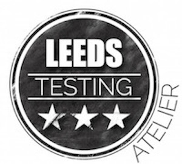

The Leeds Testing Atelier is back! Independent, punk, for the people!
On Tuesday 9th of May 2017, the Leeds Testing Atelier returns for another installment of talks, workshops, panels and games. Wharf Chambers of Leeds will once again be our hosts, two tracks targeted at all disciplines involved in testing, from effective unit testing to building a testing focused community, getting started with devops to presentation karaoke!